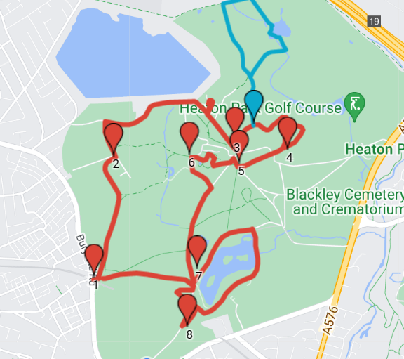
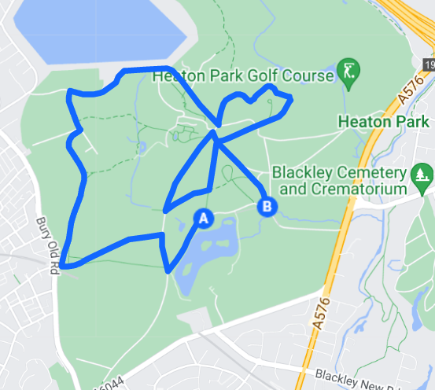

The Park Walks
Crowford Fram Park is a great place to stretch your legs or get out running, with a range of running and walking routes for all abilities. Many of the routes are accessible for those with a disability or for families with pushchairs, but please contact the park before you visit if you would like details on accessibility and ground conditions.
For organised runs and walks contact us to check our events listings and enroll. We host parkrun at 9am every Saturday. A free 5km run against the clock. Register before your first run on the parkrun website.

Three Miles Sightseeing Walk
This easy walk takes in most of the sights of the park and should take two and a half to three hours. It is wheelchair accessible except for the optional Hazlitt Wood walk. The Hazlitt wood walk is an extra mile.

Five Miles Walk and Run
This easy walk takes in most of the sights of the park and should take two and a half to three hours. It is wheelchair accessible except for the optional Hazlitt Wood walk. The Hazlitt wood walk is an extra mile.